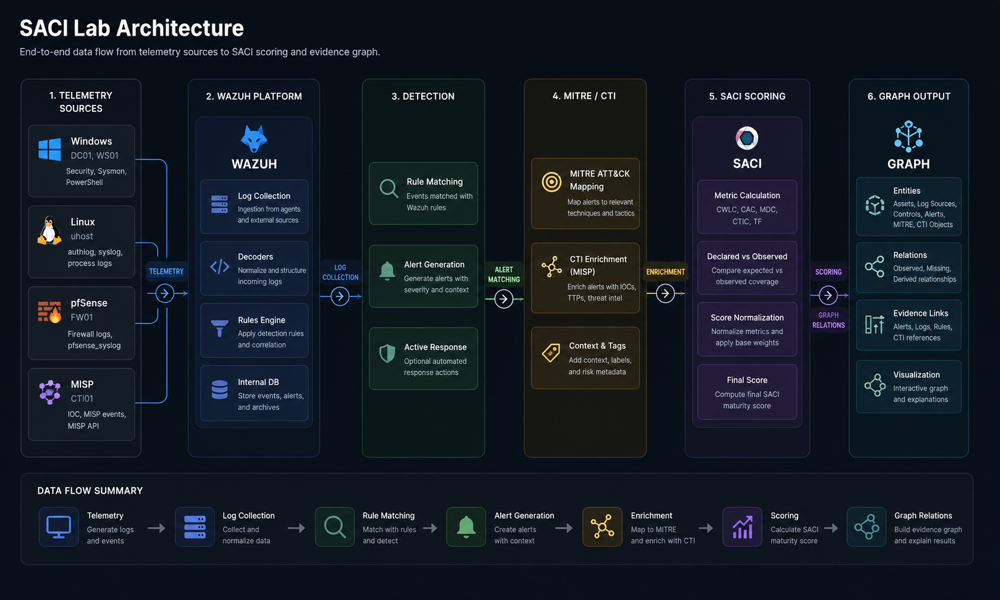

RESULTS
SACI results summary
This page consolidates the final quantitative results, evidence-graph closure, MITRE/CTI coverage and scenario-based validation findings of the SACI model.
The publication-level final dataset and the historical S0–S18 validation series are interpreted separately. Figures can be exported as SVG and adapted for the paper.
Loading results...
Final results
Core indicators derived from the publication-level final evidence package.
Interpretation boundary: SACI=100 indicates closure of declared visibility relations. It is not an absolute security guarantee.
Scenario view
Inspect the final dataset and every S0–S18 validation scenario available in the manifest.
FINAL
Final visibility closure
Graph summary
Primary effect
Academic interpretation
Scenario component profile
Active SACI components of the selected dataset.
System and evidence structure
Architecture and final graph-level results used to support the scoring model.
Laboratory architecture and evidence flow
Telemetry, Wazuh, detection, MITRE/CTI, SACI and graph-output layers.

Final SACI component profile
Normalized scores across active visibility dimensions.
Evidence-graph closure
Observed and missing relations in the final evidence graph.
MITRE and CTI coverage
ATT&CK technique coverage and staged CTI/MISP closure.
Scenario-based validation
Figures showing score progression, missing-relation closure, criticality sensitivity, CTI behavior, freshness degradation and active-scope normalization.
SACI progression across S0–S18
Sensitivity of the score to staged visibility improvements and controlled degradations.
Missing-relation progression
Reduction and reappearance of missing evidence relations across the controlled validation series.
Criticality sensitivity
S7A critical DC01 Sysmon loss versus S7B non-critical WS01 Sysmon loss.
CTI-stage behavior
Comparison of enrichment activation, open CTI chains and no-hit lookup outcomes.
Freshness degradation and recovery
S15 freshness degradation compared with post-remediation recovery in S17.
Active-scope normalization
S18 treatment of a legacy control outside the active evaluation scope.
Interpretation and limitations
Academic interpretation of the final and scenario-based results.